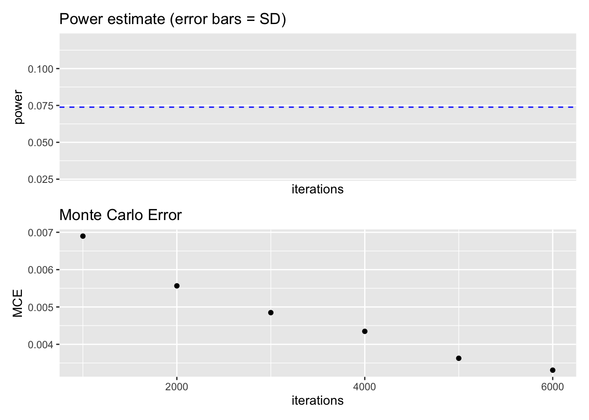

# Preparation: Install and load all necessary packages
# install.packages(c("RcppArmadillo", "ggplot2", "patchwork", "pwr"))
library(ggplot2) # for plotting
library(RcppArmadillo) # for fast LMs
library(patchwork) # for arranging multiple ggplots
library(pwr) # for analytical power analysisBonus: How many Monte Carlo iterations are necessary?
Reading/working time: ~25 min.
To find the sample size needed for a study, we have previously used, say, 1000 iterations of data simulation and analysis, and varied the sample size n from, say, 100 to 1000, every 50, to find where the 80% power threshold was crossed (see Chapter 1). But is 1000 iterations giving a precise enough result?
Using the optimized code, we can explore how many Monte Carlo iterations are necessary to get stable computational results: We can re-run the same simulation with the same sample size and see how much random variation is between results!
Note
Monte Carlo methods, or Monte Carlo experiments, are a broad class of computational algorithms that rely on repeated random sampling to obtain numerical results. The underlying concept is to use randomness to solve problems that might be deterministic in principle. They are often used in physical and mathematical problems and are most useful when it is difficult or impossible to use other approaches. Monte Carlo methods are mainly used in three problem classes: optimization, numerical integration, and generating draws from a probability distribution.
Let’s start with 1000 iterations (at n = 100 and 10 repetitions of the same power analysis):
set.seed(0xBEEF)
iterations <- 1000
# CHANGE: do the same sample size repeatedly, and see how much different runs deviate.
ns <- rep(100, 10)
result <- data.frame()
for (n in ns) {
x <- cbind(
rep(1, n),
c(rep(0, n / 2), rep(1, n / 2))
)
p_values <- rep(NA, iterations)
for (i in 1:iterations) {
y <- 23 - 3 * x[, 2] + rnorm(n, mean = 0, sd = sqrt(117))
mdl <- RcppArmadillo::fastLmPure(x, y)
pval <- 2 *
pt(
abs(mdl$coefficients / mdl$stderr),
mdl$df.residual,
lower.tail = FALSE
)
p_values[i] <- pval[2]
}
result <- rbind(
result,
data.frame(n = n, power = sum(p_values < .005) / iterations)
)
}
result n power
1 100 0.065
2 100 0.070
3 100 0.068
4 100 0.066
5 100 0.067
6 100 0.073
7 100 0.071
8 100 0.070
9 100 0.071
10 100 0.063As you can see, the power estimates show some variance, ranging from 0.063 to 0.073. This can be formalized as the Monte Carlo error (MCE), which is define as “the standard deviation of the Monte Carlo estimator, taken across hypothetical repetitions of the simulation” (Koehler et al., 2009). With 1000 iterations (and 10 repetitions), this is:
sd(result$power) |> round(4)[1] 0.0031We only computed 10 repetitions of our power estimate, hence the MCE estimate is quite unstable. In the next computation, we will compute 100 repetitions of each power estimate (all with the same simulated sample size).
How much do we have to increase the iterations to achieve a MCE smaller than, say, 0.005 (i.e, an SD of +/- 0.5% of the power estimate)?
Let’s loop through increasing iterations (this takes a few minutes):
iterations <- seq(1000, 6000, by = 1000)
# let's have 100 repetitions to get sufficiently stable MCE estimates
ns <- rep(100, 100)
result <- data.frame()
for (it in iterations) {
# print(it) uncomment for showing the progress
for (n in ns) {
x <- cbind(
rep(1, n),
c(rep(0, n / 2), rep(1, n / 2))
)
p_values <- rep(NA, it)
for (i in 1:it) {
y <- 23 - 3 * x[, 2] + rnorm(n, mean = 0, sd = sqrt(117))
mdl <- RcppArmadillo::fastLmPure(x, y)
pval <- 2 *
pt(
abs(mdl$coefficients / mdl$stderr),
mdl$df.residual,
lower.tail = FALSE
)
p_values[i] <- pval[2]
}
result <- rbind(
result,
data.frame(iterations = it, n = n, power = sum(p_values < .005) / it)
)
}
}
# We can compute the exact power with the analytical solution:
exact_power <- pwr.t.test(d = 3 / sqrt(117), sig.level = 0.005, n = 50)
p1 <- ggplot(result, aes(x = iterations, y = power)) +
stat_summary(fun.data = mean_cl_normal) +
ggtitle("Power estimate (error bars = SD)") +
geom_hline(
yintercept = exact_power$power,
colour = "blue",
linetype = "dashed"
)
p2 <- ggplot(result, aes(x = iterations, y = power)) +
stat_summary(fun = "sd", geom = "point") +
ylab("MCE") +
ggtitle("Monte Carlo Error")
p1 / p2Warning: Computation failed in `stat_summary()`.
Caused by error in `fun.data()`:
! The package "Hmisc" is required.
As you can see, the MCE gets smaller with increasing iterations. The desired precision of MCE <= .005 can be achieved at around 3000 iterations (the dashed blue line is the exact power estimate from the analytical solution). While precision increases quickly by going from 1000 to 2000 iterations, further improvements are costly in terms of computation time. In sum, 3000 iterations seems to be a good compromise for this specific power simulation.
Note
This choice of 3000 iterations does not necessarily generalize to other power simulations with other statistical models. But in my experience, 2000 iterations typically is a good (enough) choice. I often start with 500 iterations when exploring the parameter space (i.e., looking roughly for the range of reasonable sample sizes) and then “zoom” into this range with 2000 iterations.
In the lower plot, you can also see that the MCE estimate itself is a bit wiggly – we would expect a smooth curve. It suffers from meta-MCE! We could increase the precision of the MCE estimate by increasing the number of repetitions (currently at 100).
Back to top